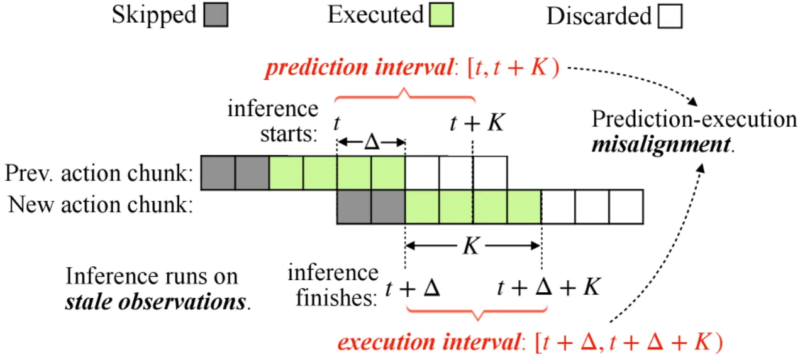
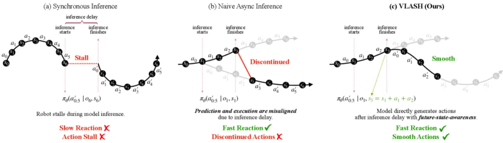
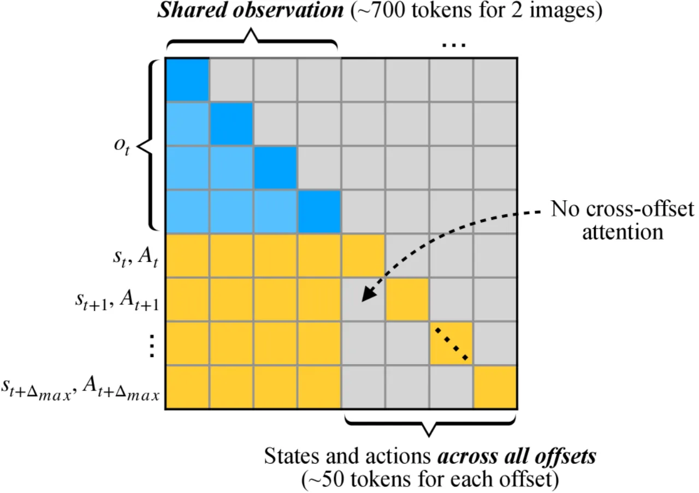
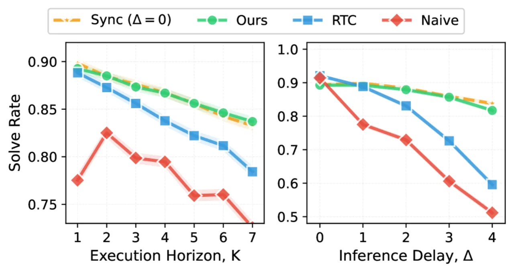
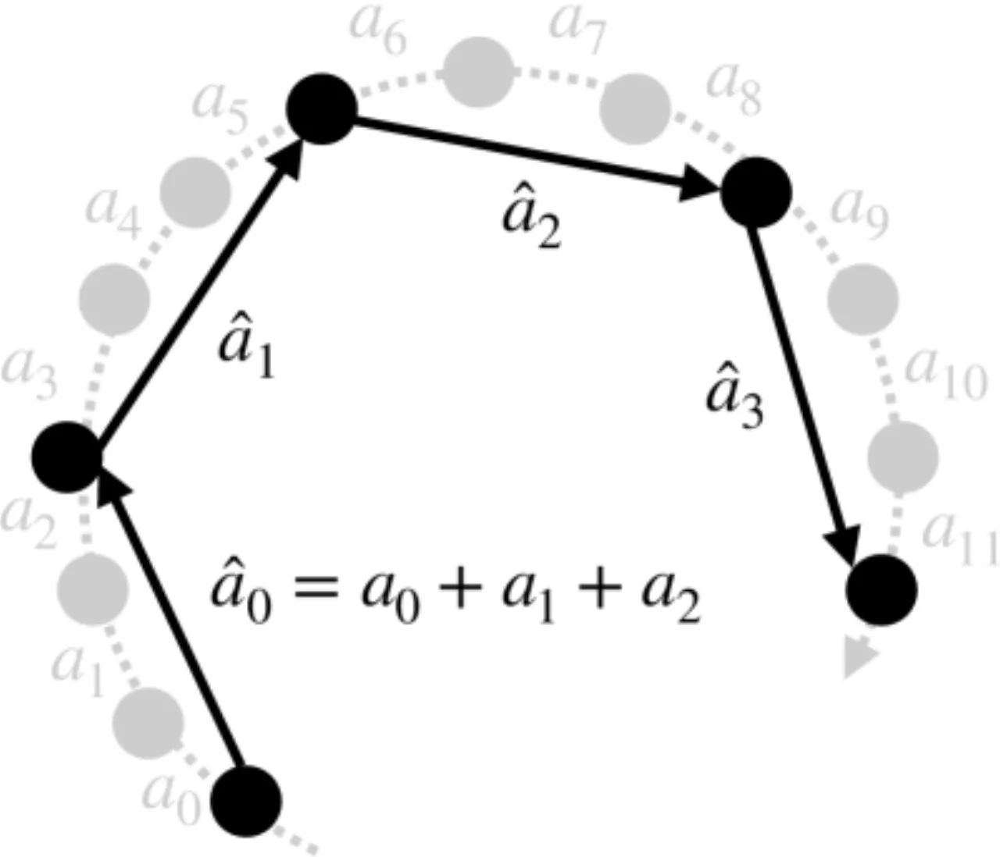
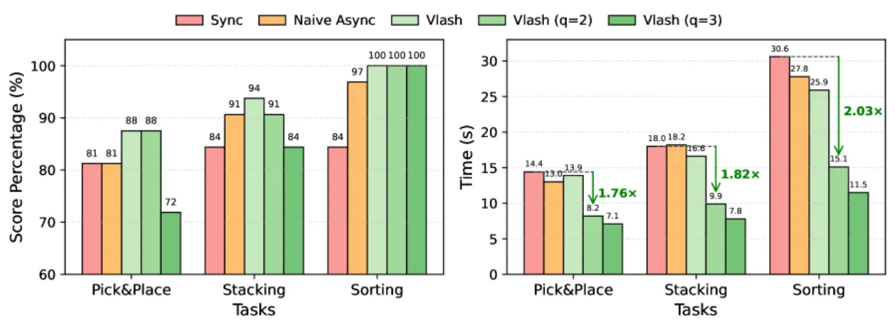

Vision-Language-Action (VLA) 模型推理速度慢，导致机器人控制出现"动作停顿"现象。VLASH 提出将推理与执行并行化，并通过滚动预测未来执行时刻的机器人状态来消除时序错位，从而在不损失精度的前提下实现实时控制。
当前 VLA 模型推理延迟高（数百毫秒），若采用同步推理，机器人在等待结果期间必须停止运动，造成"动作停顿"，严重降低任务效率；而直接切换为异步推理（执行与推理并行），则会引入时序错位问题——模型推理时的机器人状态与实际执行时的状态不一致，导致控制不稳定甚至失败。
"Asynchronous inference… introduces a fundamental challenge: the robot's execution-time state diverges from the prediction-time state due to inference latency Δ, causing severe instability and degraded control accuracy."

VLASH 由三个互补模块组成：(1) 未来状态滚动（Future State Rollforward），在推理前估算执行时刻的机器人状态；(2) 时序偏移增强（Temporal-Offset Augmentation），让模型在微调阶段学会应对不同推理延迟；(3) 动作量化（Action Quantization），将细粒度动作聚合为粗粒度宏动作，进一步加速执行。

对于推理延迟为 Δ 步的情形，VLASH 利用已生成的动作序列将当前状态向前滚动，估算执行开始时刻的机器人状态：
"The robot state at the beginning of the execution interval st+Δ is determined by the current robot state st and the actions executed during the inference delay at:t+Δ−1."
例如当 Δ=2 时，有 s₃ = s₁ + a₁ + a₂。由于机器人关节运动学可精确建模，未来机器人状态可以精确预测（尽管环境状态仍不可知）。

为提升微调效率，VLASH 将多个偏移分支打包进同一序列并使用块稀疏注意力掩码（block-sparse attention masking）：每个偏移分支的状态-动作 token 可以看到所有观测 token，但不同偏移分支之间相互隔离。对于 π0.5 而言，单次前向传播中约 700 个观测 token 搭配多个偏移（每个约 50 token），序列长度仅增加约 20%，但有效训练轨迹数量扩大 5×，微调速度提升 3.26×。


实验在仿真（LIBERO、Kinetix）和真实双臂机器人平台上进行，基线模型包括 π0.5 和 SmolVLA-450M，对比方案包括同步推理、朴素异步推理。评估指标为任务成功率、执行时间、反应延迟。
| 推理延迟（步数） | 朴素异步（成功率） | VLASH（成功率） | 加速比 |
|---|---|---|---|
| 0（同步基线） | 96.8% | 96.8% | 1.00× |
| 1 | — | 97.2% | 1.17× |
| 2 | — | 97.1% | 1.31× |
| 3 | — | 94.6% | 1.47× |
| 4 | — | 93.1% | 1.45× |
| 方案 | 成功率 | vs. 朴素异步 |
|---|---|---|
| 朴素异步推理 | 51.2% | — |
| VLASH | 81.7% | +30.5% |
| 方案 | 平均得分 | 完成时间 | 加速比 |
|---|---|---|---|
| 同步推理 | 83% | 21.0 s | 1.00× |
| VLASH（无量化） | 94% | 18.8 s | 1.12× |
| VLASH + 量化 q=2 | 94% | — | 2.03× |
| VLASH + 量化 q=3 | 89.3% | — | 2.67× |
| GPU | 同步推理延迟 | VLASH 延迟 | 降低倍数 |
|---|---|---|---|
| RTX 5090 | 530.4 ms | 30.4 ms | 17.4× |
| RTX 4090 | 536.1 ms | 36.1 ms | 14.9× |
| RTX 5070 | 564.1 ms | 64.1 ms | 8.8× |

在 LIBERO 仿真中，延迟 3~4 步时成功率从 97% 降至约 93~94%；SmolVLA-450M 的方差更大，表明不同架构对时序偏移的鲁棒性存在差异。
量化因子 q=2 时无明显精度损失（2.03× 加速），但 q=3 时精度下降约 4.7%（2.67× 加速）。量化超参数需要针对具体任务单独调整。
论文明确指出，未来机器人状态可通过运动学精确滚动，但"未来环境状态仍不可知"。对于物体频繁被外力扰动或场景动态变化激烈的任务，效果可能受限。
状态滚动基于 s_{t+Δ} = s_t + a_{t:t+Δ−1} 的关节运动学。若机器人存在系统误差、关节柔性或滑动，滚动预测误差可能累积，影响较大延迟下的对齐精度。
尽管块稀疏注意力将微调速度提升 3.26×，VLASH 仍需对预训练 VLA 进行专项微调（实验中收敛略慢于标准微调）。对于资源有限的场景，计算成本仍是考量因素。